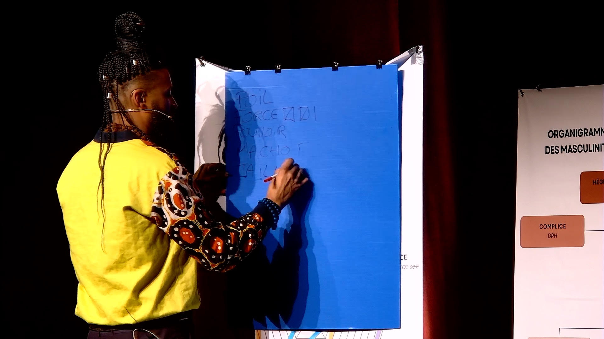
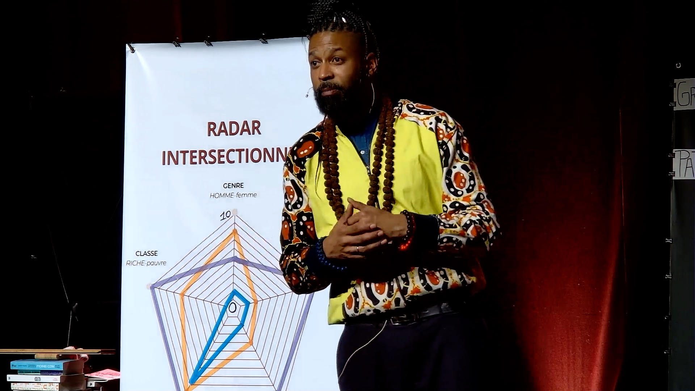

<!doctype html>
<html lang="fr">
<head>
<meta charset="utf-8">
<title>La Conférence — L'imposture du Mâle-Alpha</title>
<meta name="viewport" content="width=device-width,initial-scale=1">
<link rel="preconnect" href="https://fonts.googleapis.com">
<link rel="preconnect" href="https://fonts.gstatic.com" crossorigin>
<link href="https://fonts.googleapis.com/css2?family=Archivo+Black&family=Anton&family=Bebas+Neue&family=Oswald:wght@400;700&family=Bricolage+Grotesque:wght@400;700&family=Instrument+Serif:ital@0;1&family=DM+Serif+Display:ital@0;1&family=Playfair+Display:ital,wght@0,400;1,400&family=Cormorant+Garamond:ital,wght@0,400;1,400&family=Inter+Tight:wght@400;500;600&display=swap" rel="stylesheet">
<link rel="stylesheet" href="shared.css">
</head>
<body class="theme-paper">
  <div id="root"></div>

  <script src="https://unpkg.com/react@18.3.1/umd/react.development.js" integrity="sha384-hD6/rw4ppMLGNu3tX5cjIb+uRZ7UkRJ6BPkLpg4hAu/6onKUg4lLsHAs9EBPT82L" crossorigin="anonymous"></script>
  <script src="https://unpkg.com/react-dom@18.3.1/umd/react-dom.development.js" integrity="sha384-u6aeetuaXnQ38mYT8rp6sbXaQe3NL9t+IBXmnYxwkUI2Hw4bsp2Wvmx4yRQF1uAm" crossorigin="anonymous"></script>
  <script src="https://unpkg.com/@babel/standalone@7.29.0/babel.min.js" integrity="sha384-m08KidiNqLdpJqLq95G/LEi8Qvjl/xUYll3QILypMoQ65QorJ9Lvtp2RXYGBFj1y" crossorigin="anonymous"></script>

  <script type="text/babel" src="tweaks-panel.jsx"></script>
  <script type="text/babel" src="tweaks.jsx"></script>
  <script type="text/babel" src="shared.jsx"></script>

  <script type="text/babel">
    function ConfPage() {
      useCurtainTransitions("var(--pink)");
      useReveal();

      const fiche = [
        { k: "Objectif", v: "Vulgariser le thème de l'égalité femme-homme" },
        { k: "Durée", v: "1h05" },
        { k: "Public", v: "À partir de 20 personnes" },
        { k: "Espace", v: "4 à 8 m²" },
        { k: "Matériel", v: "3 kakémonos · 1 table · 1 tabouret · 1 enceinte · petits accessoires scéniques" },
        { k: "Format", v: "Outil clé en main, autonome en matériel scénique et sonore" },
      ];

      const publics = [
        { tag: "Scolaire", body: "3ème, 2nd, 1ère, Terminale" },
        { tag: "Jeune", body: "Centre social, MJC, Mission Locale, associations, associations sportives" },
        { tag: "Jeune-adulte", body: "Université, écoles supérieures, associations, associations sportives" },
        { tag: "Adulte", body: "Entreprises, collectivités territoriales, associations, prison, caserne" },
      ];

      return (
        <>
          <SiteHeader active="conf" />

          {/* HERO band */}
          <section style={{ background: "var(--pink)", padding: "80px 32px 60px", borderBottom: "1.5px solid var(--ink)" }}>
            <div style={{ maxWidth: "var(--maxw)", margin: "0 auto" }}>
              <div className="eyebrow">Fiche 01 — Conférence gesticulée</div>
              <h1 className="h-display">
                L'IMPOSTURE<br/>DU MÂLE-ALPHA
              </h1>
              <p className="h-serif" style={{ marginTop: 32, maxWidth: "26ch" }}>
                <em>Un one-man show pédagogique. À mi-chemin entre spectacle vivant et réflexion sociétale.</em>
              </p>
            </div>
          </section>

          {/* Big intro split */}
          <section className="page reveal">
            <div className="col2">
              <div>
                <div className="eyebrow">Approche</div>
                <h2 className="h-section">
                  Déconstruire la virilité…<br/>
                  <span style={{ background: "var(--yellow)", padding: "0 .1em", display: "inline-block" }}>
                    pour reconstruire les masculinités.
                  </span>
                </h2>
              </div>
              <div className="body-l">
                <p style={{ marginBottom: 20 }}>
                  La démarche de cet outil, à mi-chemin entre spectacle vivant et réflexion sociétale, invite tout le monde à s'interroger sur les conséquences de la virilité dans nos sociétés.
                </p>
                <p>
                  L'objectif est de rechercher ensemble des solutions pour favoriser des modes de fonctionnement et de vie plus inclusifs et basés sur la tolérance.
                </p>
              </div>
            </div>
          </section>

          {/* Photos */}
          <section className="page reveal">
            <div style={{ display: "grid", gridTemplateColumns: "2fr 1fr", gap: 16, height: "min(70vh, 700px)" }}>
              <div style={{ overflow: "hidden", border: "1.5px solid var(--ink)" }}>
                
              </div>
              <div style={{ display: "grid", gridTemplateRows: "1fr 1fr", gap: 16 }}>
                <div style={{ overflow: "hidden", border: "1.5px solid var(--ink)" }}>
                  
                </div>
                <div style={{ overflow: "hidden", border: "1.5px solid var(--ink)" }}>
                  
                </div>
              </div>
            </div>
          </section>

          {/* Big quote */}
          <section style={{ background: "var(--ink)", color: "var(--paper)", padding: "100px 32px", borderTop: "1.5px solid var(--ink)", borderBottom: "1.5px solid var(--ink)" }} className="reveal">
            <div style={{ maxWidth: "var(--maxw)", margin: "0 auto" }}>
              <p className="quote" style={{ color: "var(--paper)" }}>
                "Une conférence gesticulée est une prise de parole publique qui porte nécessairement une <span style={{ color: "var(--yellow)", fontFamily: "var(--font-display)", fontStyle: "normal" }}>dimension politique</span>. Elle naît d'une décision personnelle mais s'élabore au cours d'une formation collective : <em>c'est un acte d'éducation populaire</em>. Sa mise en forme est le fruit d'un tressage entre des <span style={{ color: "var(--pink)", fontFamily: "var(--font-display)", fontStyle: "normal" }}>savoirs chauds</span>, des <span style={{ color: "var(--pink)", fontFamily: "var(--font-display)", fontStyle: "normal" }}>savoirs froids</span> et parfois un troisième fil. Elle conduit à un atterrissage politique… et une sacrée aventure !"
              </p>
            </div>
          </section>

          {/* Fiche technique */}
          <section className="page reveal">
            <div className="eyebrow">Fiche technique</div>
            <h2 className="h-section" style={{ marginBottom: 40 }}>Tout tient<br/>dans une mallette.</h2>
            <div style={{ display: "grid", gridTemplateColumns: "repeat(2, 1fr)", border: "1.5px solid var(--ink)" }}>
              {fiche.map((f, i) => (
                <div key={f.k} style={{
                  padding: "32px 28px",
                  borderRight: i % 2 === 0 ? "1.5px solid var(--ink)" : "none",
                  borderBottom: i < fiche.length - 2 ? "1.5px solid var(--ink)" : "none",
                  minHeight: 160,
                }}>
                  <div className="eyebrow" style={{ marginBottom: 12 }}>{f.k}</div>
                  <p style={{ fontFamily: "var(--font-display)", textTransform: "uppercase", fontSize: "clamp(20px, 2vw, 32px)", lineHeight: 1.05, letterSpacing: "-.02em" }}>{f.v}</p>
                </div>
              ))}
            </div>
          </section>

          {/* Approche pédagogique */}
          <section className="page reveal">
            <div className="col2">
              <div>
                <div className="eyebrow">Démarche pédagogique</div>
                <h2 className="h-section">Un point<br/>de vue situé.</h2>
              </div>
              <div className="body-l">
                <p style={{ marginBottom: 20 }}>
                  Dans le but de rendre accessibles les dominations systémiques et les enjeux de société tels que le racisme, le sexisme, l'accès au logement et aux soins, la conférence gesticulée se présente comme un <strong>outil pédagogique pragmatique</strong>.
                </p>
                <p style={{ marginBottom: 20 }}>
                  Son objectif principal est de permettre à divers publics cibles de comprendre de façon simple les sujets abordés.
                </p>
                <p>
                  En combinant des anecdotes de la vie quotidienne avec des références issues des sciences humaines — sociologie, histoire, philosophie — la conférence propose un point de vue situé : des analyses basées sur des expériences vécues, tout en s'appuyant sur des recherches, des médias ou des textes de lois.
                </p>
              </div>
            </div>
          </section>

          {/* Public cible */}
          <section style={{ background: "var(--pink)", padding: "80px 32px", borderTop: "1.5px solid var(--ink)", borderBottom: "1.5px solid var(--ink)" }} className="reveal">
            <div style={{ maxWidth: "var(--maxw)", margin: "0 auto" }}>
              <div className="eyebrow">Public cible — à partir de 14 ans</div>
              <h2 className="h-section" style={{ marginBottom: 40 }}>Pour qui ?</h2>
              <div style={{ display: "grid", gridTemplateColumns: "repeat(4, 1fr)", gap: 0, border: "1.5px solid var(--ink)" }}>
                {publics.map((p, i) => (
                  <div key={p.tag} style={{
                    padding: "32px 24px",
                    borderRight: i < 3 ? "1.5px solid var(--ink)" : "none",
                    minHeight: 240,
                    display: "flex", flexDirection: "column", justifyContent: "space-between",
                    background: "var(--paper)",
                  }}>
                    <span className="chip" style={{ alignSelf: "flex-start", background: "var(--ink)", color: "var(--paper)", border: "1.5px solid var(--ink)" }}>{p.tag}</span>
                    <p style={{ fontFamily: "var(--font-serif)", fontStyle: "italic", fontSize: "clamp(18px, 1.5vw, 24px)", lineHeight: 1.2 }}>{p.body}</p>
                  </div>
                ))}
              </div>
            </div>
          </section>

          {/* Teaser */}
          <section className="page reveal" style={{ padding: "100px 32px" }}>
            <div className="eyebrow" style={{ justifyContent: "center", display: "flex" }}>Teaser</div>
            <h2 className="h-display" style={{ marginBottom: 32, textAlign: "center" }}>
              Voir la conférence<br/>
              <em style={{ fontFamily: "var(--font-serif)", textTransform: "none", letterSpacing: "-.02em" }}>en mouvement.</em>
            </h2>
            <div style={{ maxWidth: 1100, margin: "40px auto 0" }}>
              <div className="yt-wrap">
                <iframe src="https://www.youtube.com/embed/M0SiVachnZI" title="Teaser" allow="accelerometer; autoplay; clipboard-write; encrypted-media; gyroscope; picture-in-picture; web-share" allowFullScreen></iframe>
              </div>
            </div>
            <div style={{ marginTop: 32, textAlign: "center" }}>
              <a href="contact.html" className="btn">Programmer une date <span className="arrow">→</span></a>
            </div>
          </section>

          <SiteFooter />
          <PascalTweaks />
        </>
      );
    }

    ReactDOM.createRoot(document.getElementById("root")).render(<ConfPage />);
  </script>
</body>
</html>
